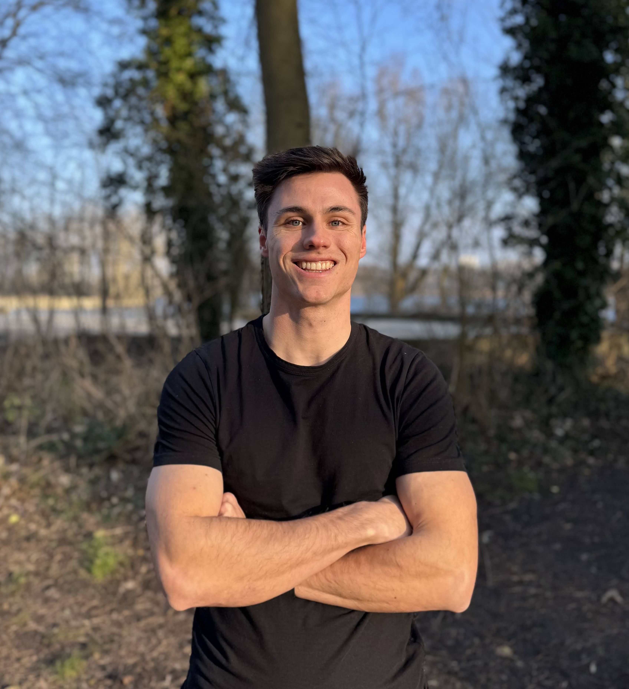

About me
I'm an AI engineer based in Amsterdam. My main interests are artificial intelligence and the human body. I love to challenge myself with complex problems where those two intersect, brain signals, clinical reasoning, the messy reality of medical data.
Right now I'm at Delphyr, building safe and trustworthy AI for healthcare professionals. Before that I worked on RAG systems and voicebots at Future Facts Conclusion. I hold an MSc in Artificial Intelligence from the VU Amsterdam.

AI Engineer
Building Medical AI at Delphyr, a clinical assistant that helps healthcare professionals reclaim their time. Owning the guardrails & evaluation stack: prompt design, retrieval, hallucination detection, citation verification, and end-to-end scenario testing for real clinical use.
AI Engineer
Built RAG-based chatbots for enterprise knowledge bases, achieving up to 75% time savings for customer service teams. Co-developed the first Conclusion voicebot, focusing on prompt engineering, sentiment-aware tone, and compliance with the AI Act and GDPR.
Brain-Computer Interface researcher
Six-month master's project building an end-to-end real-time motor-imagery BCI on a consumer EEG headset (g.tec Unicorn). Pipeline included artefact rejection, CSP/Riemannian feature extraction, deep transfer learning with EEGNET, and a live integration that let subjects play Space Invaders with their thoughts.
Vrije Universiteit Amsterdam · cum laude
Graduated cum laude (8.6/10). Master research project carried out in Elche, Spain, in the lab of Professor Jose M. Azorin: "Deep transfer learning for real-time upper-limb motor imagery decoding with a low-cost EEG device." Graded 9.0/10.
Vrije Universiteit Amsterdam
Biomechanics, motor control and exercise physiology, the foundation behind my interest in artificial intelligence and the human body. Bachelor project: "Assessing the validity of 2D-ultrasound linear extrapolation techniques for measuring biceps femoris long-head muscle architecture." Graded 9.0/10.
I like to stay active with fitness, padel, cycling, running, salsa and bachata. Outside of that, I like to DJ and learn some Spanish, mainly so I can stop smiling confidently at salsa songs that are clearly about emotional damage.